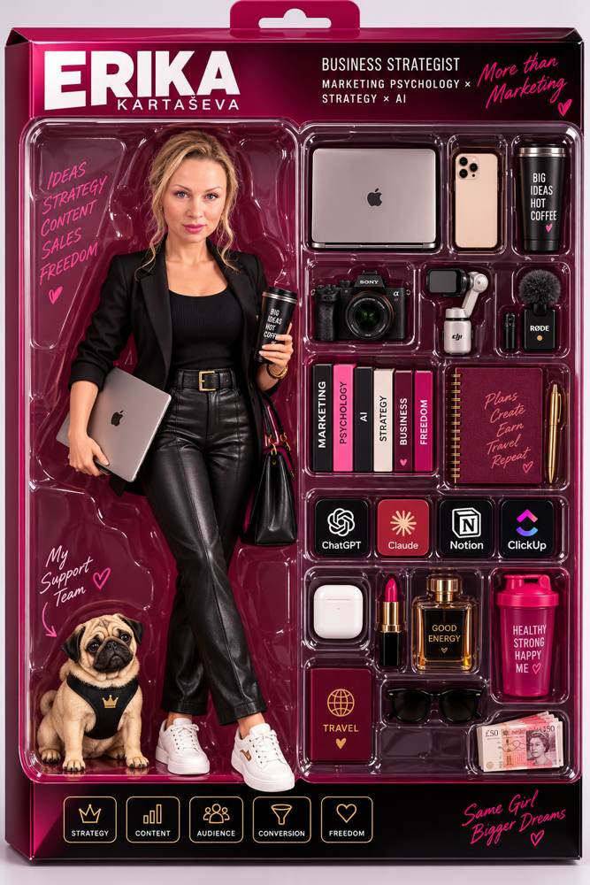

ChatGPT · vaizdai
Įkelk nuotrauką, parašyk norimą komandą, pavyzdžiui, /neonportrait, ir gauk portretą, reklamą ar produkto kadrą. Surinkau komandas, kurias naudoju pati, sugrupavau jas pagal tai, ko tau reikia, ir prie kiekvienos įdėjau tikrą pavyzdį. Paspausk ant bet kurios ir nusikopijuok trumpą komandą arba pilną promptą.
Kaip tai veikia
ChatGPT neturi paslėpto meniu su /proshot ar /billboard. Jam tai tiesiog žodis. Brūkšnys priekyje parodo, kad toliau eina užduotis, o ne pokalbis, ir ChatGPT pats atspėja, ką tas žodis reiškia.
Komanda pasako tik kryptį: koks turi būti rezultatas. Ji nepasako, ko negalima keisti. Todėl ChatGPT kartais perpiešia veidą, pakeičia logotipą ar prikuria užrašų.
Jei su trumpa komanda nepavyko gauti norimo rezultato, prie kiekvienos komandos rasi išsamesnį promptą. Arba pati prie komandos pridėk vieną kitą eilutę apie tai, ką išsaugoti ir ko nori. Taip komanda iš loterijos tampa įrankiu.
Instrukcija
Užtenka keturių žingsnių. Svarbiausias yra pirmasis, nors jį dažniausiai praleidžia.
Pirma įkelk nuotrauką į pokalbį, tada parašyk komandą. Kai trumpos komandos neužtenka, papildyk ją promptu: pakeisk laužtinių skliaustų vietas savo žodžiais. Išsamesni promptai kataloge sudėti pagal šį šabloną.
/[komanda]
Užduotis: [ką pakeisti, viena eilute]
Išsaugok: [veidą / pozą / logotipą / užrašus]
Formatas: [1:1, 4:5, 9:16 arba 16:9]
Pirmą žinutę parašyk su nuotrauka ir šiuo tekstu. Tada ChatGPT kiekvieną komandą darys iš naujo ir nekels į ją fono, aksesuarų ar stiliaus iš ankstesnių kadrų. Su produktu vietoj „žmogaus, veido, plaukų“ parašyk „produkto formos, spalvos ir logotipo“. Jei vis tiek perima, prie komandos prirašyk: „nauja atskira generacija, be jokių elementų iš ankstesnių vaizdų“.
Šią nuotrauką laikyk vieninteliu pagrindiniu reference. Kiekvienai naujai komandai: • naudok tik šią originalią nuotrauką kaip žmogaus, veido, plaukų ir bazinės išvaizdos šaltinį; • nesiremk jokia anksčiau sugeneruota nuotrauka; • kiekvienas rezultatas yra atskiras naujas kūrinys nuo nulio pagal konkrečią komandą; • ankstesnių generacijų stilius, poza, apranga, fonas ar detalės nepersiduoda, nebent pati komanda jų aiškiai reikalauja.
Dažniausios klaidos
Dažniausiai dėl vienos iš trijų priežasčių. Prie kiekvienos parašiau, ką daryti.
Komanda yra tik žodis, o vieną žodį galima suprasti keliais būdais. Pavyzdžiui, /brickfigure gali duoti ir laisvai stovinčią figūrėlę, ir figūrėlę dėžutėje.
Ką daryti: po komanda parašyk, ko nenori, pavyzdžiui, be dėžutės, be pakuotės.
Jei tame pačiame pokalbyje padarei kelias figūrėles dėžutėse, ChatGPT ims dėžutes kišti ir į kitus vaizdus.
Ką daryti: kiekvienai komandai atidaryk naują pokalbį arba pradžioje įklijuok tekstą iš bloko „Darai daug vaizdų viename pokalbyje?“.
Jei nieko neparašai, ChatGPT gali pakeisti veidą, amžių, logotipą ar užrašus ant pakuotės.
Ką daryti: po komanda pridėk vieną eilutę, pavyzdžiui, Išsaugok mano veidą ir plaukų spalvą arba Išsaugok logotipą ir užrašus.
Tokios komandos neradau. Pabandyk kitą žodį, pavyzdžiui, „portretas“, „fonas“ arba „reklama“.
Netrukus · Mini programa
Šį komandų katalogą sukūriau su dirbtiniu intelektu, be programuotojo. Mini programoje žingsnis po žingsnio išmoksi susikurti tokius interaktyvius puslapius: katalogus, gidus, testus ar skaičiuokles savo tema.
Tokį puslapį gali naudoti klientams pritraukti, auditorijai auginti, kaip dovaną už prenumeratą arba kurti kitiems ir už tai imti atlygį.
Parašyti Erikai TelegramParašyk žodį SVETAINĖ, ir atsakysiu asmeniškai: kada startuojame ir kiek kainuoja.
Jei nori, kad tavo turinys ne tik gražiai atrodytų, bet ir pardavinėtų, pradėkime nuo nemokamo 30 minučių pokalbio.